List Of Hotels
Radisson Blu Plaza
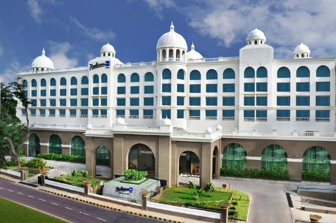
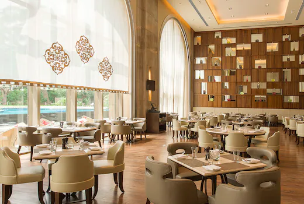
One of the premier hotels in Mysuru, the Radisson Blu Plaza Hotel Mysuru offers city center convenience and gorgeous views of the Chamundi Hills. If you are arriving from Mandakalli Airpor, hotel is just 20-minutes drive away. Travelling with children? Watch the antics of the animals at Mysuru Zoo, or have a great time at the sprawling shopping mall right next door.
Price for 1 night stay ranges from Rs.2500-2800
Location
Hotel Siddharta
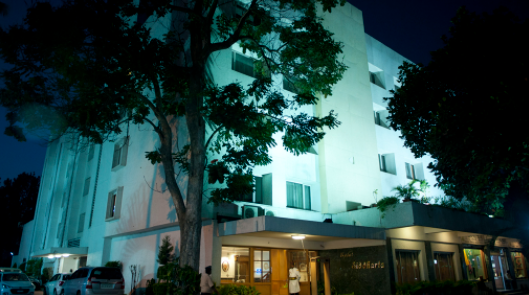
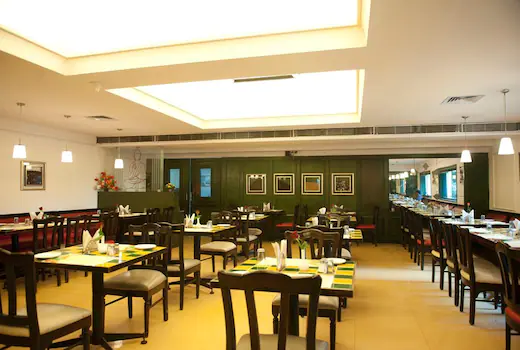
If you happen to be in Mysore and are looking for a place to stay, this is the perfect budget hotel in Mysore for families. Hotel Siddharta in Mysore city always rolls out the red carpet for you. Hotel Siddharta, centrally located in the heritage Mysore city, has been a name to reckon with in the hospitality business since it was opened in 1982. Hotel Siddharta is ideal for both business travelers and holidays-makers and serves as an excellent base to explore the cultural wonders of Mysore.
Price for 1 night stay ranges from Rs.2169
Location
Sandesh The Prince
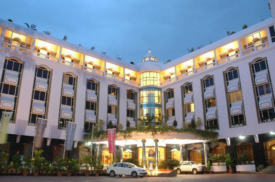
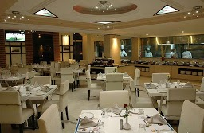
Sandesh The Prince, a 4 Star Hotel in Mysore that caters to your every need. Conveniently situated in Heart of historic City of Mysore. They provide you with varieties of rooms like Premier suite, Premier room, Executive suite, Executive superior room and facilities like swimming pool, restaurants, spa, business centre, banquets and many more.
Price for 1 night stay ranges from Rs.2200-2800
Location
Hotel Mayura Hoysala
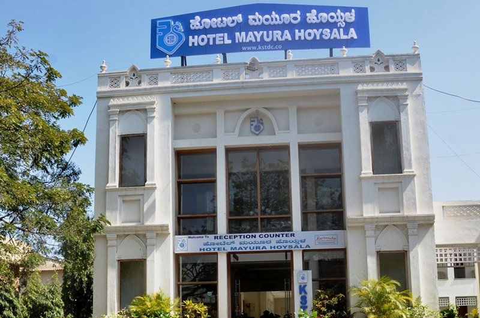
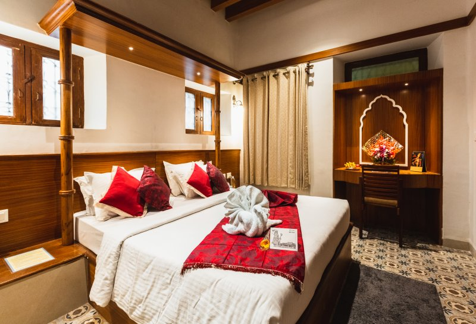
Hotel Mayura Hoysala is located in the centre of the city and close to the railway station which directly offers convenience to visitors.It is own and maintained by Karnataka State Tourism Development Corporation Limited. Nestled in a heritage building, the hotel offers gracious accommodation in the form of 31 Air-conditioned double bedrooms, 10 standard double bedrooms and 11 Family Dormitory Rooms. The warm hospitable hotel has a Bar and Restaurant, a Garden Cafe and Conference / Party Hall with a seating capacity of 50 pax, offering guests a homely dining experience.
Price for 1 night stay ranges from Rs.1700-1900
Location
Ruchi The Prince
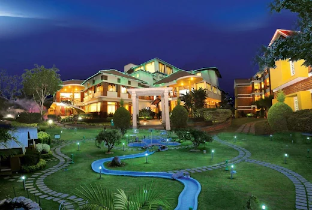
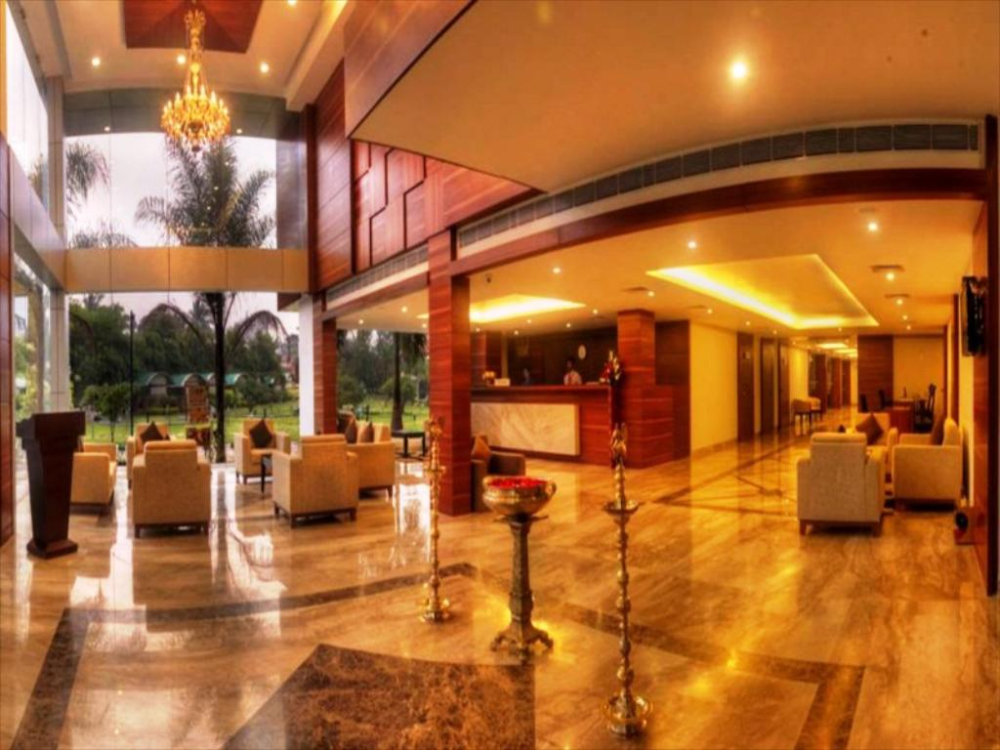
Located in Mysore, it enjoys proximity to all places of tourist and commercial interest in and around Mysore. Hotel Ruchi offers a range of modern facilities and services at reasonable prices. With accommodation options for all budgets, the hotel is ideal for business travelers as well as leisure travelers. Ruchi the prince is a premium hotel offering contemporary services and facilities in a sassy ambience.
Price for 1 night stay ranges from Rs.1500-2700
Location
The Roost - Non vegetarian Family Restaurant
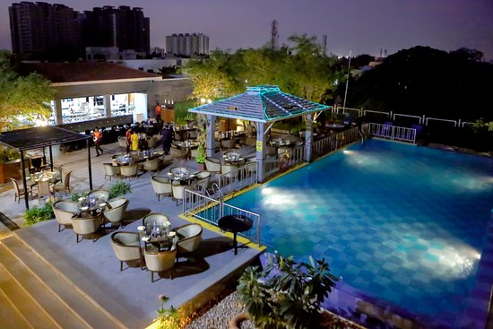
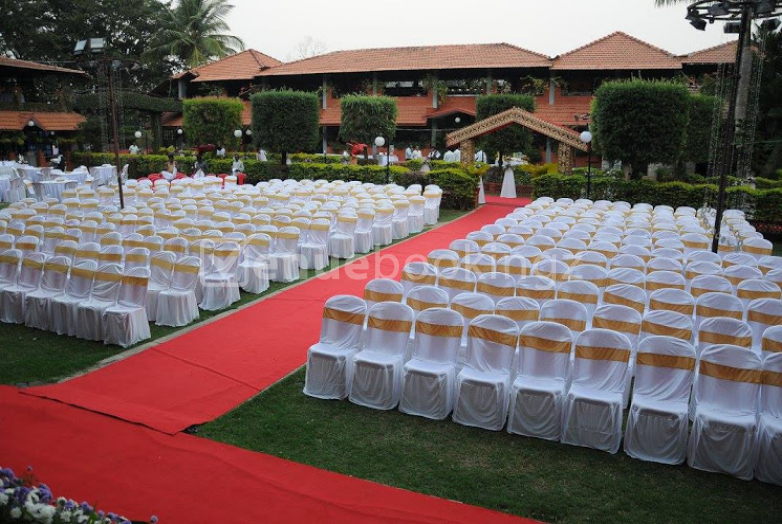
The ROOST is a hotel and restaurant set amidst sprawling greenery. It offer you a rare opportunity and the freedom to indulge yourself. Recharge yourself surrounded by unrestrained lawns, vast expanse of the nature, an abundant beauty of chirping birds, and the natural extravaganza. Everyone needs a place to lay their weary head. For travellers visiting Mysuru (Mysore), The Roost is an excellent choice for rest and rejuvenation. Well-known for its family-friendly environment and proximity to great restaurants, The Roost makes it easy to enjoy the best of Mysuru (Mysore).
Location
Grand Mercure
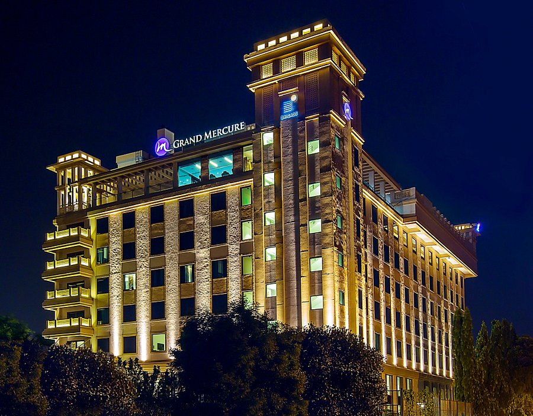
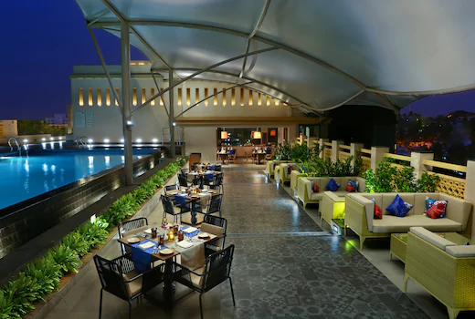
Be it a holiday or a business trip, experience luxury at Grand Mecure Mysore, one of the best Business hotels in Mysore. Enjoy vantage views of the much awaited annual Dasara procession or just soak in the sights and sounds of historic Mysore from our unparalleled suites with balconies. Grand Mercure Mysore is the first five star hotel in Mysore. Relish the authentic taste of French flavours perfectly mixed with the exotic regional flavours of Mysore at La Uppu, our all day dining restaurant specialized in international cuisine. Dine at our rooftop poolside specialty restaurant By the Blue with your loved ones and enjoy authentic North Indian fare.
rice for 1 night stay ranges from Rs.2000-2700
Location
Royal Orchid Metropole
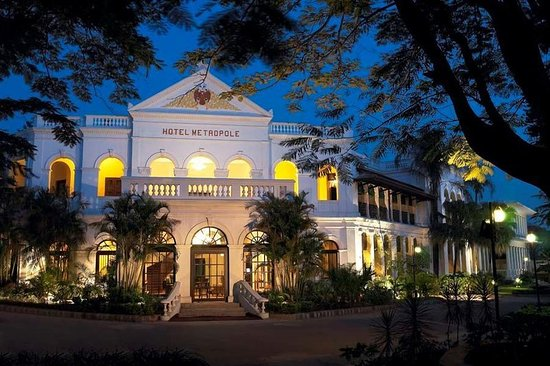
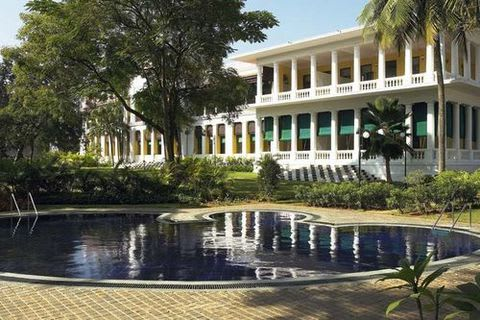
Featuring 4-star accommodation in a former Maharaja’s residence, Royal Orchid Metropole Mysore offers modern amenities in a heritage building. It boasts an outdoor pool and fitness centre. A heritage luxury hotel celebrating its 100th year in 2020, the Royal Orchid Mysuru offers the finest 'stay and dine' heritage experience in Mysuru. Originally built by the Wadiyar dynasty as a guest house for the Maharaja's elite British guests, the legacy property features 30 grand suites and luxurious rooms with private balconies, all of which exude glamour and nostalgia. The #1 choice amongst tourists seeking luxury accommodation and warm Indian hospitality in the heart of Mysuru.
Location